Valentine's Day is one of the sweetest times of year to sit down together and make something by hand. These Valentine's Day paper crafts are all made with simple supplies, work beautifully for kids of all ages, and result in something genuinely adorable. Whether you have 15 minutes before school or a whole lazy Saturday afternoon, there is an idea here that will fit your day perfectly. ❤️
Every project on this list uses basic materials you can pick up at any craft store or have ready at home. No special skills needed, no expensive tools, and very little cleanup. Just you, your child, and a little creativity together.
What You'll Need
These broad supplies cover almost every idea on the list. Grab what you have and pick up any extras before you start.
- Construction paper in red, pink, and white, the foundation for nearly every Valentine's Day paper craft on this list.
- White cardstock, sturdier than regular paper and ideal for cards, gift boxes, and anything that needs to hold its shape.
- Fiskars kids scissors, with pointed tips for detail cutting and handles sized for little hands.
- Elmer's glue sticks, washable and mess-friendly, great for all ages.
- Heart paper doilies, beautiful lacy hearts in red, pink, and white that save so much time on decoration.
- Foam heart stickers, self-adhesive and available in multiple sizes, perfect for quick embellishment on cards and crafts.
- Markers, crayons, or colored pencils for adding details and personal touches.
- String or ribbon for mobiles and garlands.
20 Valentine's Day Paper Craft Ideas
1. Paper Heart Garland
Cut strips of red and pink construction paper and loop them together into a classic paper chain, then mix in small heart shapes punched from white cardstock. The combination of round rings and hearts gives the garland a sweet, festive look that works draped across a mantel, hung in a window, or wrapped around a doorframe. Even toddlers can do the looping while you handle the gluing.
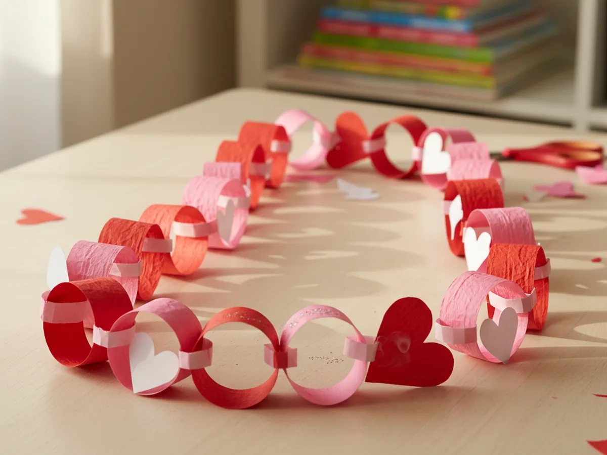
2. Valentine Paper Bag Mailbox
Fold and staple a lunch-sized paper bag into a little mailbox shape, then let your child decorate it with heart stickers, markers, and doilies. This is one of the most practical Valentine's Day paper crafts for classrooms and home: kids can actually use it to collect cards and notes from family. It is quick to make and doubles as a fun activity before the holiday arrives.
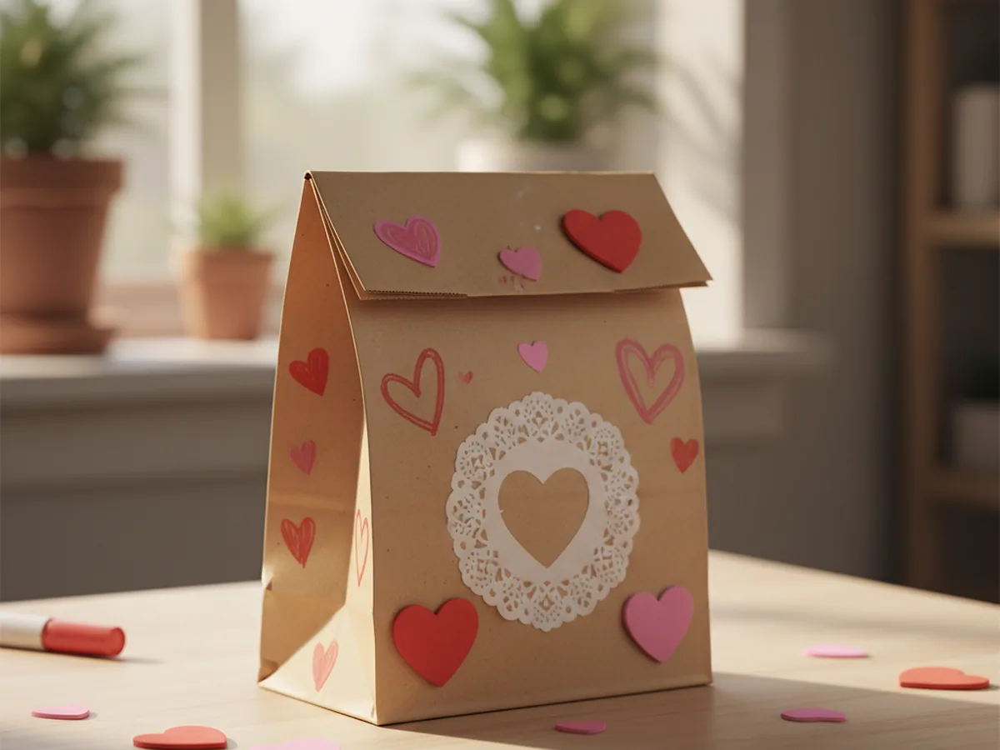
3. Origami Heart
A simple origami heart folded from a square of red or pink paper makes a beautiful little gift all on its own. Older kids can follow the folding steps independently, while younger ones love helping with the first few folds and then drawing a message inside. Tuck a tiny love note inside before giving it away and the whole thing becomes something really special. 💕
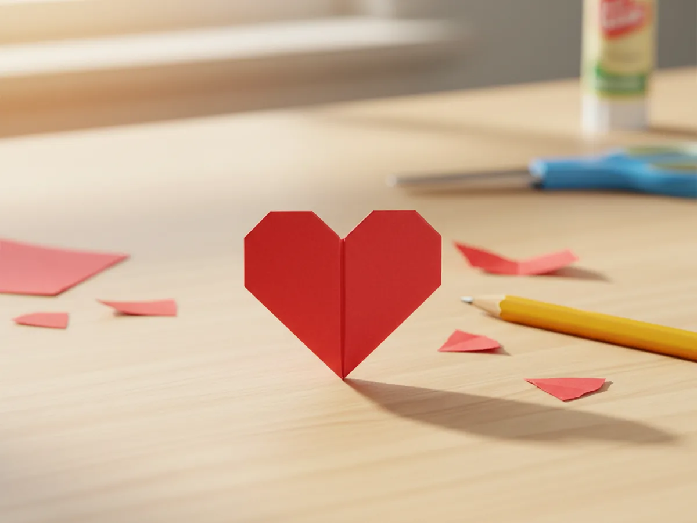
4. Heart Doily Valentine Card
Fold a piece of white cardstock in half to make a card, then glue a lacy heart doily to the front and layer a smaller red paper heart on top of it. The doily gives it an instant decorative look without any effort, and kids can write their own message inside. This is the kind of handmade paper Valentine's Day card that grandparents keep for years.
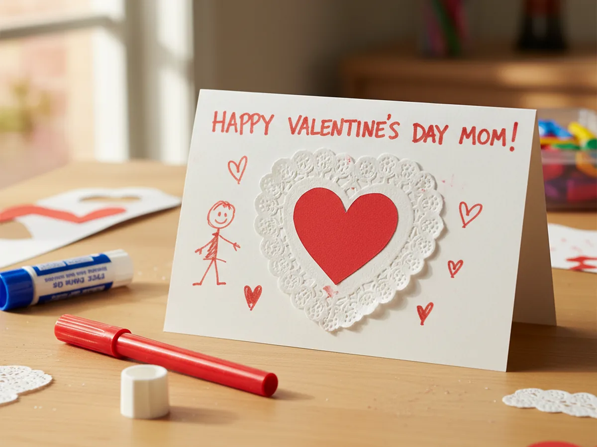
5. Paper Heart Mobile
Cut hearts in several sizes from red, pink, and white construction paper, punch a small hole at the top of each one, and thread them onto strings of different lengths. Tie all the strings to a small wooden stick or a piece of sturdy cardstock rolled into a dowel. The finished mobile spins gently in any breeze and looks magical hung near a window.
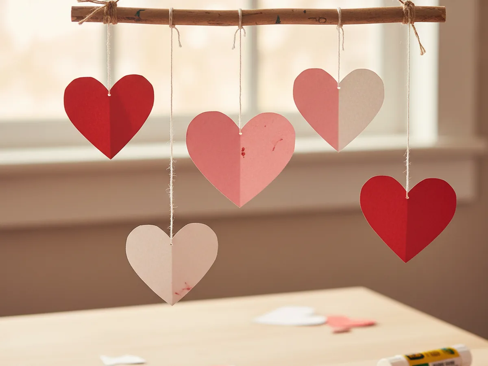
6. Corner Heart Bookmark
Fold a small square of red cardstock diagonally, tuck in the two bottom corners, and you have a little heart-shaped pocket that slips right over the corner of a book page. Add a drawn face or a small sticker heart to decorate it. Kids who love books absolutely adore this craft, and it takes less than 20 minutes from start to finish.
7. Paper Heart Wreath
Trace and cut out a ring from a piece of cardstock, then have your child cover it in overlapping paper hearts cut from pink and red construction paper. The layering effect gives the wreath a full, dimensional look that is really impressive for such a simple method. Add a ribbon bow at the top and it is ready to hang on a door or wall.
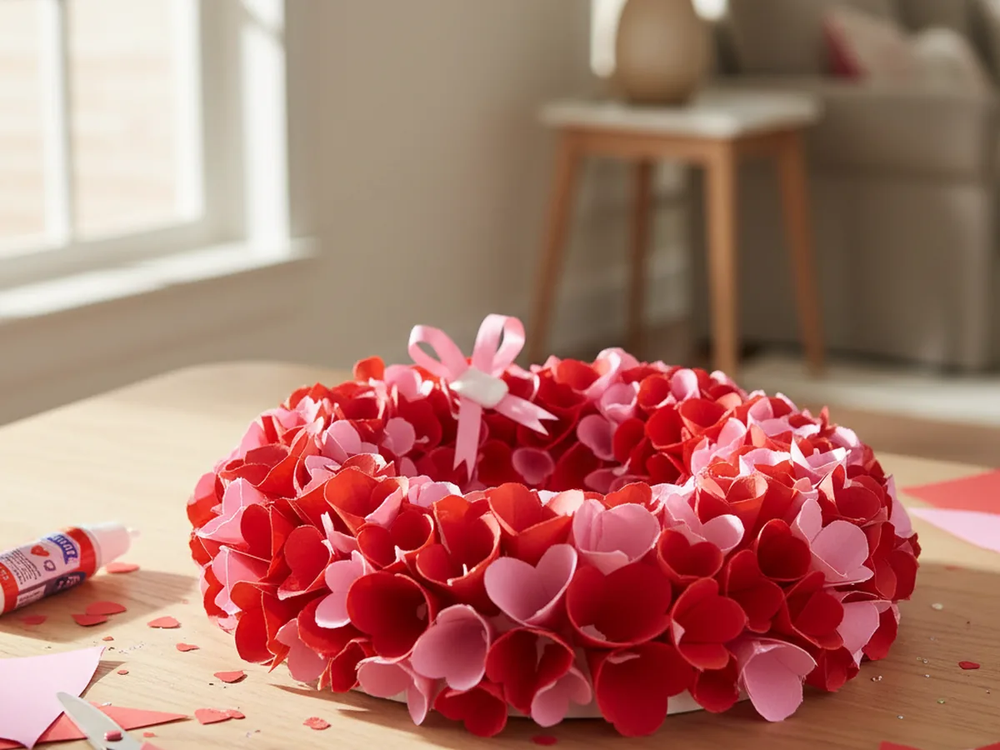
8. Tissue Paper Heart Suncatcher
Cut two identical heart shapes from cardstock and cut out the center of each one to leave just a frame. Sandwich small squares of red and pink tissue paper between the two frames, then tape the whole thing together and hang it in a window. When the light comes through, the colors glow beautifully. This is one of those Valentine's Day paper crafts that looks far more difficult than it actually is.
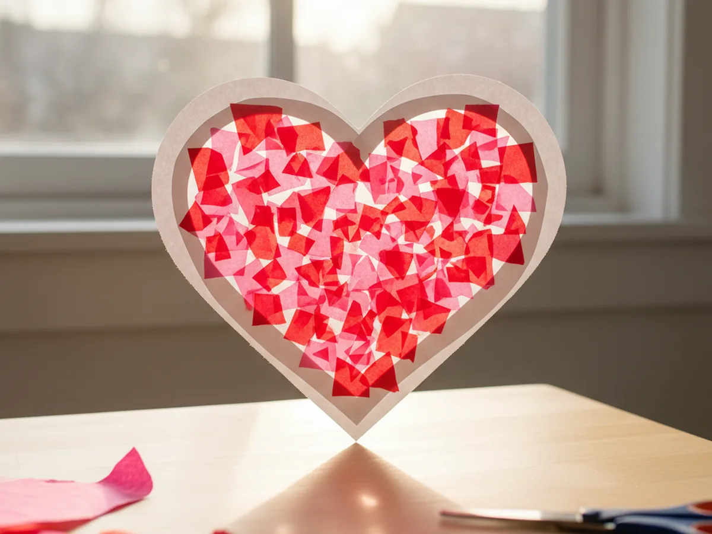
9. Paper Heart Animals
Cut hearts in different sizes and arrange them to make animals: two large hearts become the body and head of a bear, smaller hearts become ears, and tiny ones become the nose and paws. The same idea works for foxes, bunnies, and cats. This is a wonderful open-ended craft where kids can invent their own characters from a pile of paper hearts.
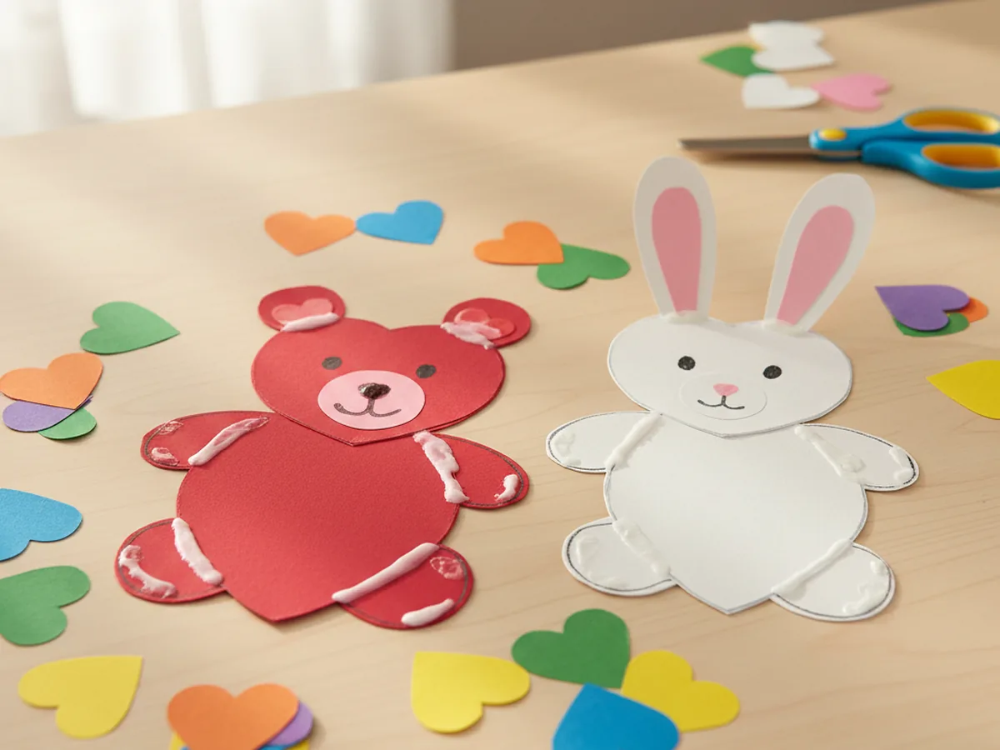
10. Woven Paper Heart Basket
This classic Scandinavian paper craft looks complicated but is wonderfully beginner-friendly once you see the steps. Fold two rectangles of contrasting paper (red and white work perfectly), cut slits along the open end, and weave the two pieces together to form a little heart-shaped basket. Fill it with a few small treats or Valentine's notes for a gift that feels truly handmade.
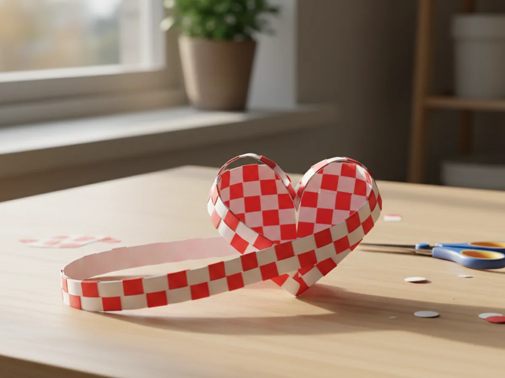
11. Paper Heart Crown
Measure a strip of cardstock around your child's head, staple the ends together into a band, and let them glue red and pink paper hearts all around the outside. Older kids can add their own lettering like "Love Queen" or "Valentine King." It is a sweet, playful craft that kids will want to wear all day long.
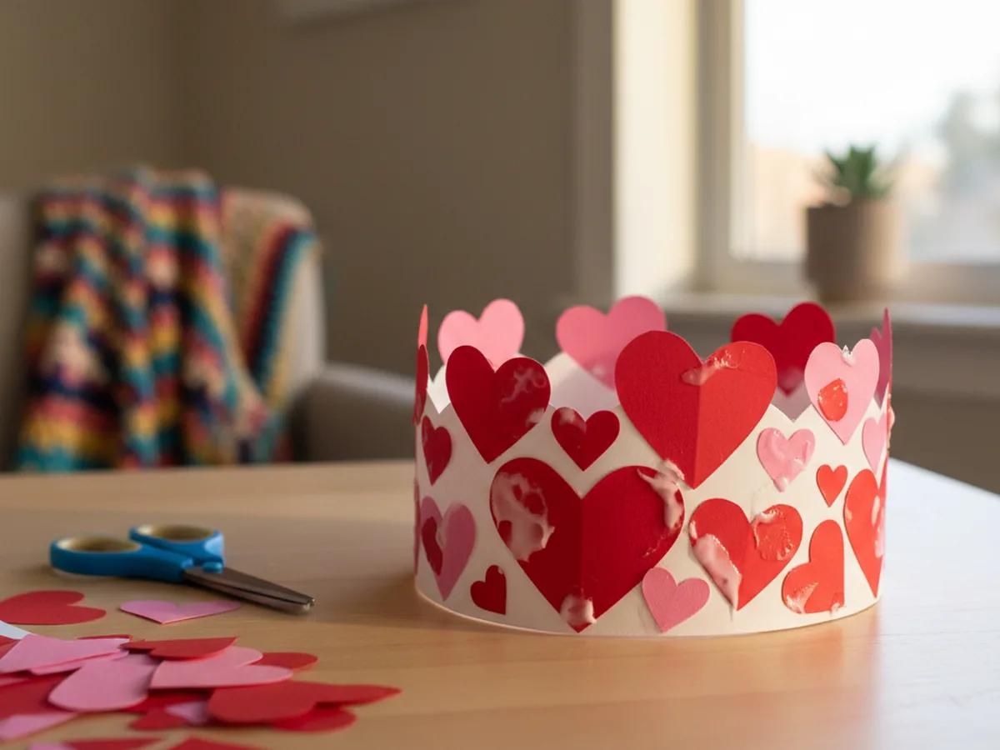
12. Spiral Paper Rose
Draw a spiral on a circle of red or pink paper, then cut along the spiral line from the outside edge toward the center. Starting at the center point, gently roll the paper strip upward and glue the base tab down to hold the shape. The result is a beautiful ruffled rose that looks stunning in a small vase or attached to a card. Younger kids will need help with the cutting, but they can do the rolling themselves.
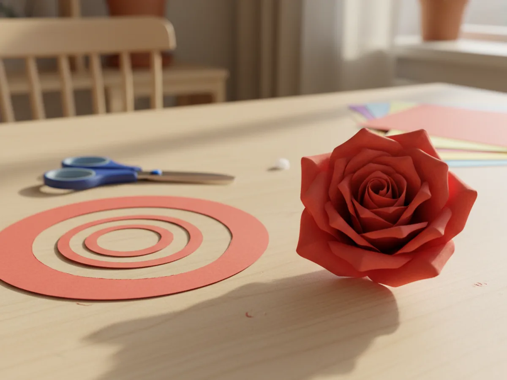
13. Heart Butterfly Card
Fold a piece of white cardstock in half and draw two large heart shapes so that the straight side of each heart sits right along the fold line. Cut out both hearts without cutting along the fold, then open it up to reveal a butterfly with heart-shaped wings. Have your child color or decorate the wings and write a message inside. It is one of those paper Valentine's Day crafts that surprises kids every time they fold it open.
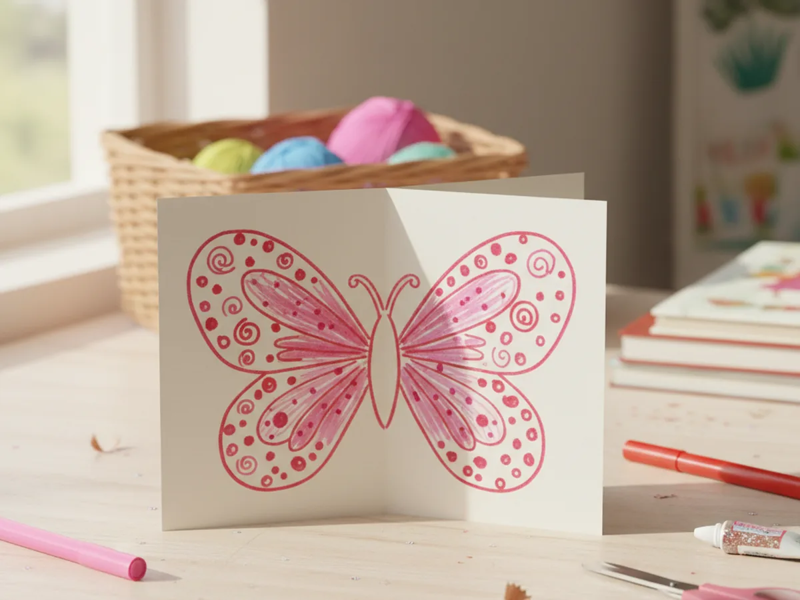
14. Love Monster Card
Cut a large heart from red cardstock, fold it in half, and let your child draw a silly monster face on the front with googly eyes, jagged teeth, and wild marker hair. Write "I love you to pieces" or "You're a monster catch" inside. These playful Valentine's Day paper cards are a hit with kids who prefer fun over fancy, and the sillier the face, the better.
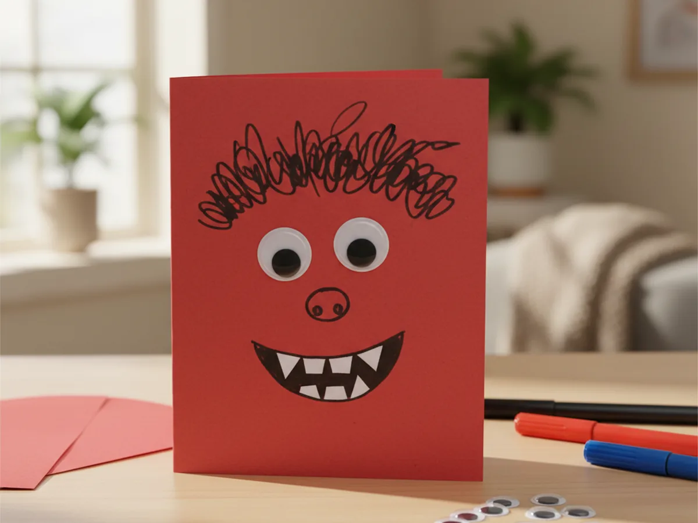
15. Paper Heart Flower Bouquet
Fold strips of green construction paper into stems and attach a cluster of layered paper hearts at the top of each one to form a flower. Arrange several in a small cup or tie them together with ribbon for a bouquet that will never wilt. This is a wonderful gift idea for Valentine's Day and is beginner-friendly enough for preschoolers with a little prep from you. 🌸
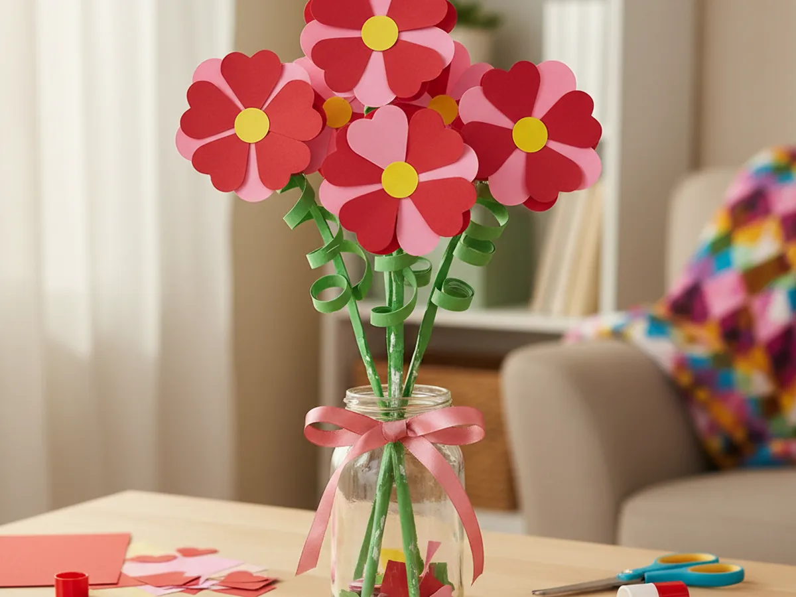
16. Folded Heart Gift Box
Fold two sheets of cardstock into small square boxes using a simple origami method, making one slightly larger than the other so it becomes the lid. Decorate the outside with heart stickers or drawn-on hearts, and fill the inside with a small treat or folded note. Kids who have tried the origami heart will find this one a natural next step, and the result is a genuinely useful gift container.
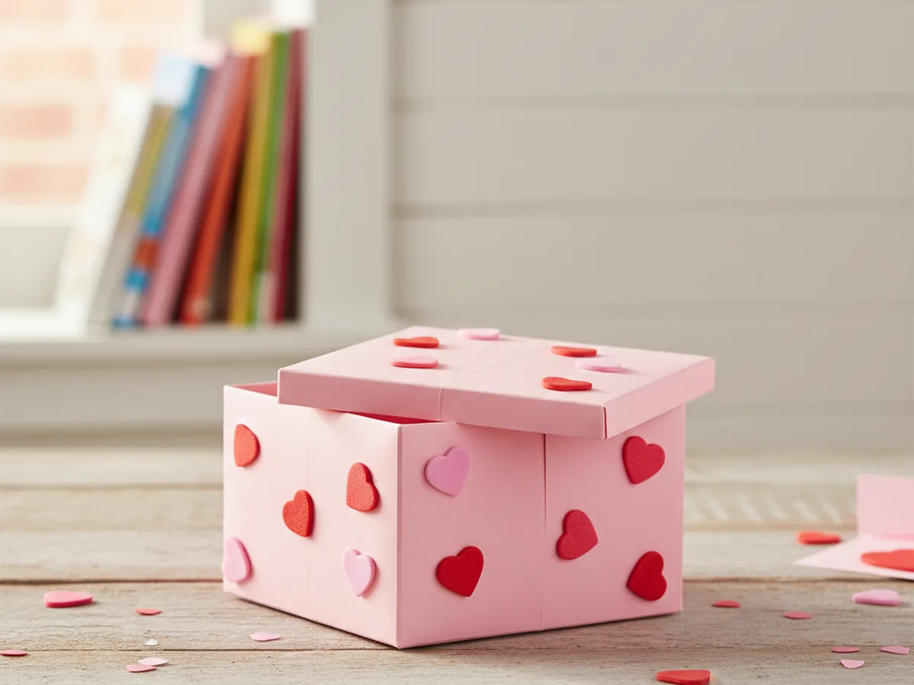
17. Heart Pinwheel
Cut a square of patterned red or pink paper, make diagonal cuts from each corner almost to the center, then fold alternating corners toward the middle and attach them to a pencil or craft stick with a brad. The pinwheel spins in the wind and looks cheerful and festive. Adding a small heart shape in the center gives it a sweet Valentine's touch that kids absolutely love.
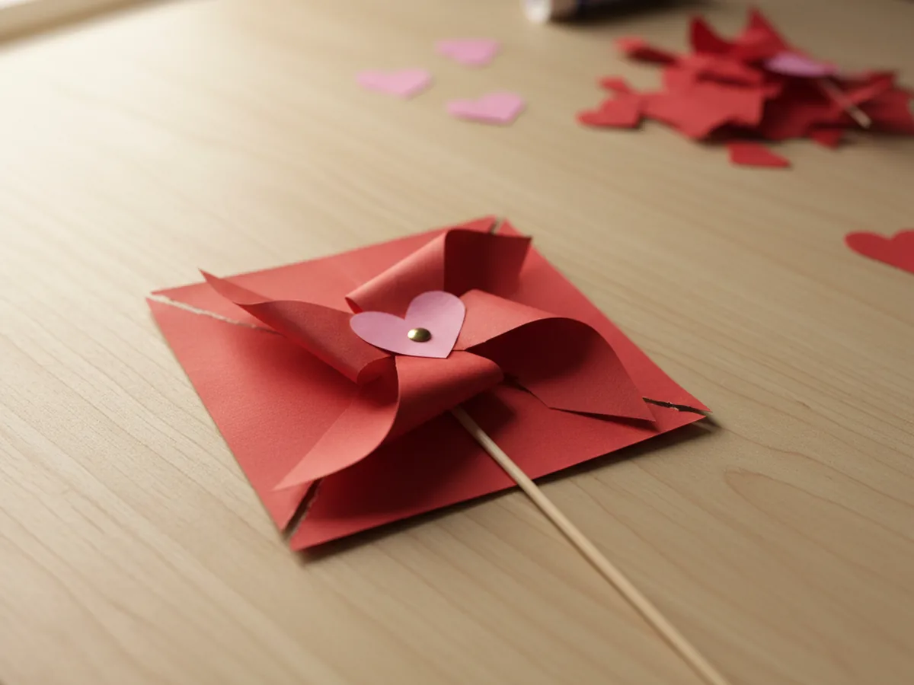
18. Valentine Paper Fan
Accordion-fold a strip of red or pink construction paper, then pinch it together at one end and fan out the other to create a classic paper fan. Glue a small heart cutout to the pinched end to hold the folds together and add a decorative touch. Younger children can do the accordion folding themselves with just a little guidance, and the fans look wonderful displayed in a vase or used as little party decorations.
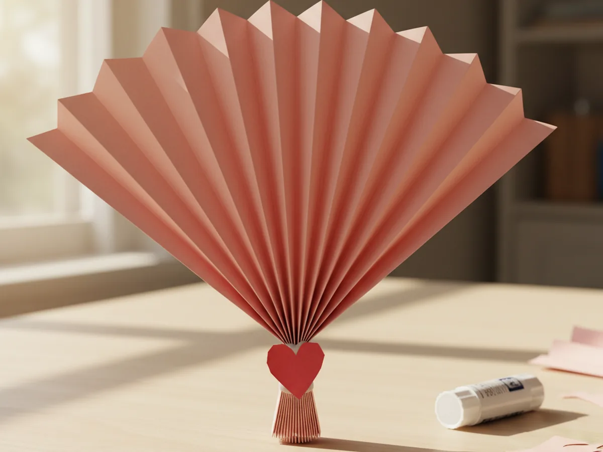
19. Love Bug Finger Puppet
Roll a small rectangle of red cardstock into a tube that fits snugly over a finger, then cut out two small heart shapes for wings and two tiny circles for eyes. Glue everything in place and add a marker smile for the face. Kids can make a whole family of love bugs in different sizes and colors, and the puppets make a sweet little Valentine's gift for a sibling or friend.
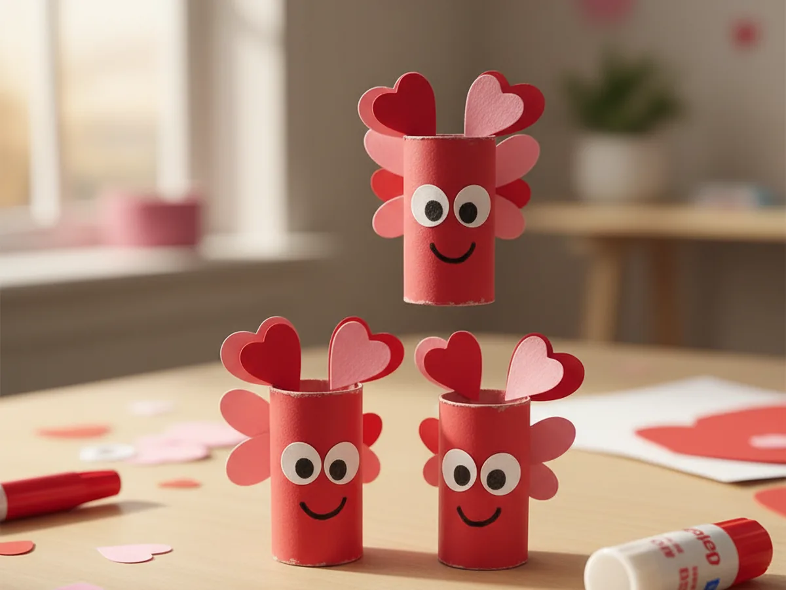
20. Paper Heart Lantern
Roll a rectangle of red or pink construction paper into a cylinder and glue the edges together, then cut vertical slits evenly around the sides and gently push the top down to bow the slits outward into a heart shape. Add a paper handle at the top and a small battery-powered tea light inside for a glowing Valentine's decoration. It looks stunning in a dim room and is one of those Valentine's Day paper crafts that genuinely surprises kids when the light comes on. 🥰
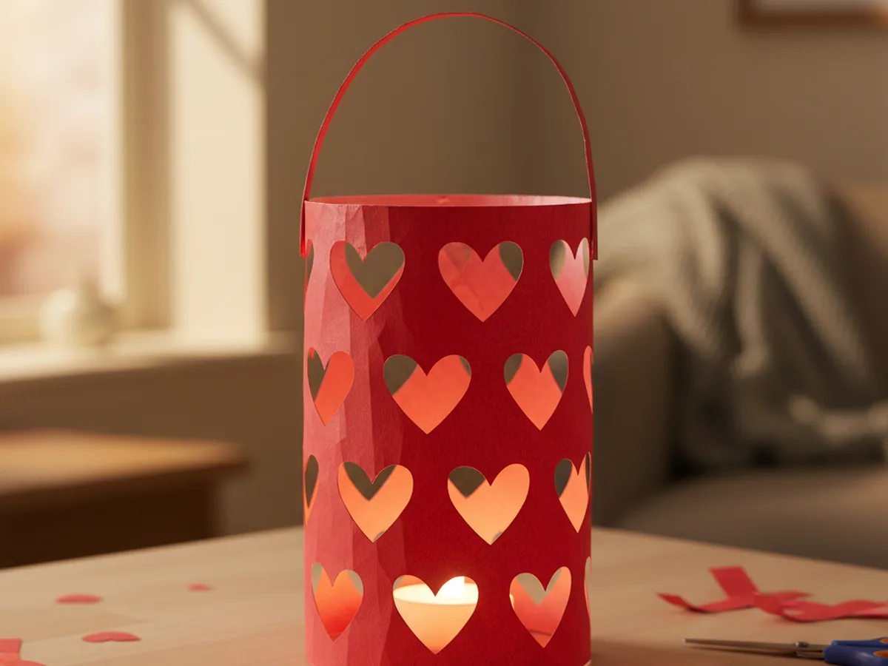
Final Thoughts
There are so many ways to celebrate love with your child, and Valentine's Day paper crafts are one of the simplest and most rewarding. You do not need fancy supplies or a lot of time. A stack of red and pink construction paper, a glue stick, and a few quiet minutes together is all it really takes to make something your child will be proud of.
Pick one idea that sounds fun to both of you and start there. You might end up making two or three before the day is done. The finished crafts are beautiful, but the real magic is always the time you spend making them. ✨
More Crafts You'll Love
If your child enjoyed these Valentine's projects, these paper crafts are perfect for all year round.
- Paper Heart Craft: A Simple Step-by-Step for Kids
- Paper Flower Craft: Easy and Beautiful for All Ages
Whatever you make, enjoy every moment of it together.